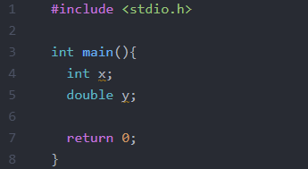
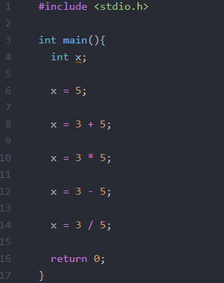
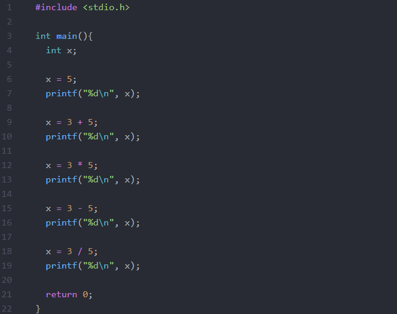
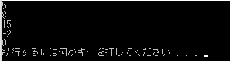

Ｃ言語では、足し算、引き算、掛け算、割り算を行うことが出来ます。
その時に使用するのが、演算子と呼ばれる記号です。リストを見てください。
| + | 足し算 |
|---|---|
| - | 引き算 |
| * | 掛け算 |
| / | 割り算 |
| == | 等号 |
| = | 代入 |
| && | かつ |
| || | または |
これがＣ言語のだいたいの演算子です。掛け算がアスタリスク * で、割り算が / というのが特徴です。
&& の「かつ」とは、例えば、ご飯かつみそ汁とあれば、ごはんとみそ汁両方ともという意味です。
|| の「または」とは、ごはんとみそ汁どちらか一方、という意味です。
さて、一番注意していただきたいのが、 = と == の違いです。プログラミング言語では、 = は「等しい」という意味でなく、「代入する」という意味です。等しいと言いたいときは、 == を使用します。
では早速、演算子を使って計算してみましょう！！ と、その前に、ぴっぴいダイエット、ではなく、変数宣言について学びましょう。
変数とは数を入れるボックスのようなもので、 x や y などを表します。
変数の宣言は、以下のように int か double を使って宣言します。
int は整数（１，２，３など小数の無い数）のみを格納するのに対し、 double は小数も格納できるというのが大きな違いです。
int を書いた横に変数名（xやy)を書いて、最後 ; をつけて宣言終了です。また計算式にも最後、 ; をつけます。
では、早速演算です！ 四則演算は以下のようにして行います。
x は整数型の変数です。
x = 5; は、x に 5 を代入します。ここでの x の値は 5 です。
x = 3 + 5; は、3 + 5 の計算をした後、その値を x に代入します。すでに x に何か値が入っている場合は、上書きされます。ここでの x の値は 8 です。
x = 3 * 5; は、3 * 5 の計算をした後、その値を x に代入します。ここでの x の値は 15 です。
x = 3 - 5; は、3 - 5 の計算をした後、その値を x に代入します。ここでの x の値は -2 です。
x = 3 / 5; は、3 ÷ 5 の計算をした後、その商を x に代入しますが、小数点以下は切り捨てられます。ここでの x の値は 0 です。
割り算はちょっと難しいタイね... 10 / 3 だったら、3余り1だから、3が代入されるのかタイ？
そうですぐさ。割り算は商を代入して、余りは切り捨てますぐさ。ちなみに、割り算の余りを代入したい場合は、%という演算子を使いますぐさ。13 % 3 は、4余り2なので、2が代入されますぐさ。
上記の計算結果は、printf関数で表示する事が出来ます。以下のリストをご覧ください。
このようにすることで、整数型の変数 x の値を表示することが出来ます。取り敢えず形として覚えてください。なお、""の一番最後に\nをつけると、改行して表示することが出来ます。
実行結果
まってタイ。文字列と整数を同時に表示することは出来ないのかタイ？
できますぐさ。例えば、「計算結果は3です」のように表示したい場合、printf("計算結果は%dです", x);のように数字の部分を%dに置き換えて入力するぐさ。ちなみに、小数を表示したい場合、%dの代わりに%fを入力しますぐさ。
いかがでしたが。このように演算子を使って計算ができるんです。
トップページへ